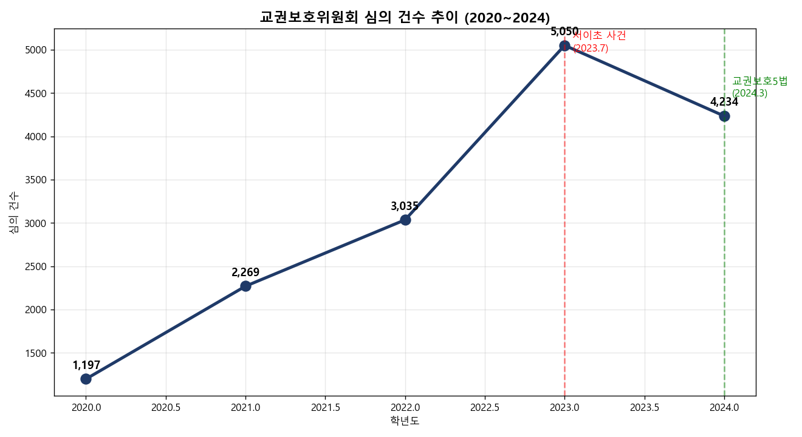
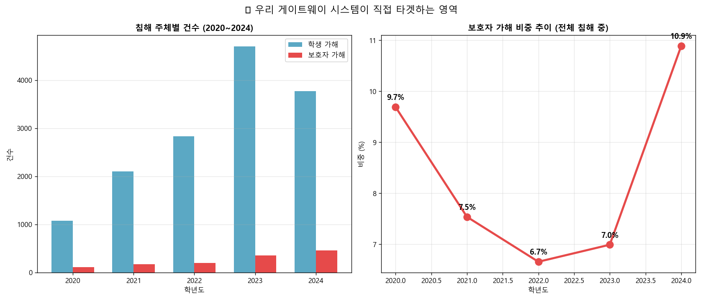
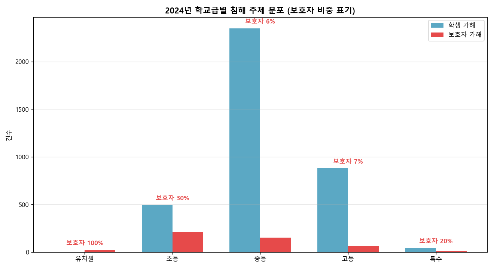
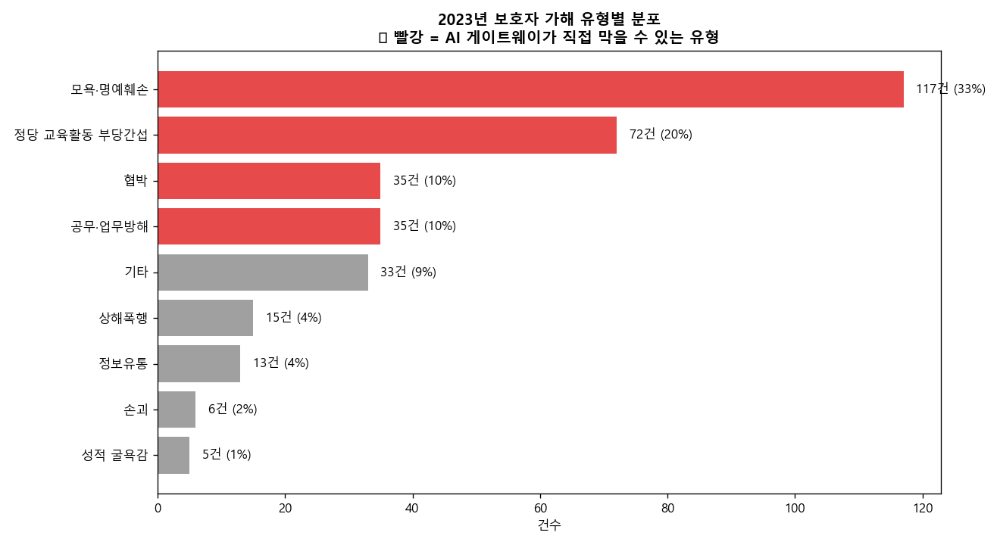

| # | DATASET | SOURCE / LICENSE | ROLE IN SYSTEM |
|---|---|---|---|
| 01 | 교권보호위원회 개최 현황 (2020~2023) | 교육부 / data.go.kr 15137983 CC BY | 교권 침해 시계열 · 학교급별·유형별 분석 |
| 02 | 2024 교육활동 침해 실태조사 | 교육부 / korea.kr 156688735 CC BY | 2024 진본 데이터 · 정책 효과 자연실험 |
| 03 | NEIS 학교정보·학사일정·급식 REALTIME | 한국교육학술정보원 / open.neis.go.kr | 학부모용 학교 검색·실시간 정보 |
| 04 | NEIS 학원교습소정보 (138,259건) | 한국교육학술정보원 / open.neis.go.kr | 학교 인근 사교육 환경 변수 (보조) |
| 05 | KOSIS 사교육비조사 (2009~2025) | 통계청 / kosis.kr DT_1PE105 | 학습 부담 ↔ 민원 발생 가설 (보조) |

| 주체 | 분류 | 예시 |
|---|---|---|
| 정당 | 안전·학사·건강·시설·정보 | 통학로 신호등 신고 |
| 모호 | 대화 권장 / 정보 부족 | "우리 아이만 차별" |
| 악성 | 교권침해 / 업무부담 / 반복 / 사적영역 / 평가 | "기 죽인다" / "사진 매끼" |

FAQ
NOTICE
LETTER
MANUAL
CLAUDE LLM
학교 연락 없이 해결 — 학부모 만족 + 교사 부담 감소 · 교권 침해 사전 차단
| RISK | 임계 | 권장 학교 대응 절차 |
|---|---|---|
| 악성 | ≥ 0.65 | 학교장·교감 우선 검토 · 교권보호위 회부 사전 협의 · 교사 단독 응대 금지, 복수 입회 · 응대 기록·녹취 (사전 고지) |
| 주의 | ≥ 0.45 | 1차 담임 + 보호자 면담 (학교 내 공식 공간) · 면담 기록 보존 · 필요 시 상담교사 동석 |
| 정당 | < 0.45 | 관할 담당자(담임/보건/시설) 정상 처리 · 처리 결과 회신 · 유사 민원 누적 시 매뉴얼 업데이트 |

